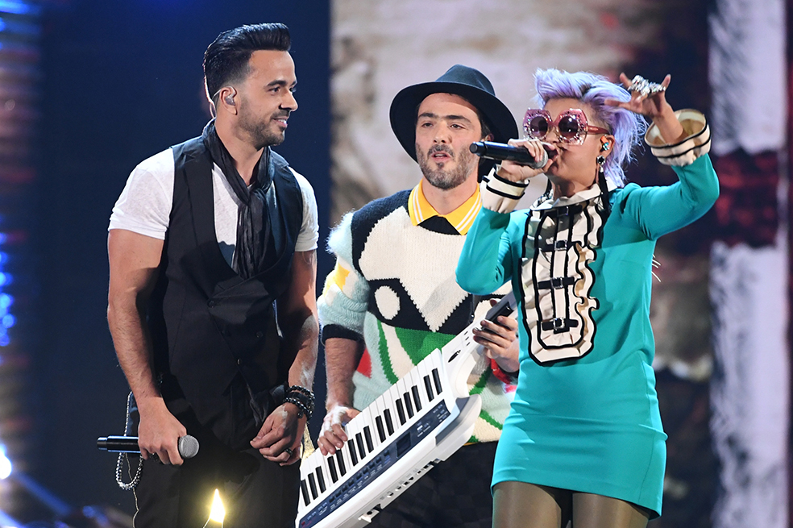

Log out
Críticas a Bomba Estéreo por interpretación de "Despacito"
Liliana Saumet fue la encargada de entonar los versos de Daddy Yankee, quien supuestamente está de pelea con Luis Fonsi
"Despacito", el éxito firmado por Luis Fonsi y Daddy Yankee que ha hecho historia en la escena latina y en la música global, arrasó en los Grammy Latino 2017 al llevarse cuatro galardones y ser coronada como la mejor canción y la mejor grabación del año. (Leer Luis Fonsi prepara versión de "Despacito" en mandarín, tras arrasar en los Grammy Latino).
En la 18 edición de los Grammy Latino, que se celebró en Las Vegas, "Despacito" hizo un póker al llevarse el premio a la mejor fusión/interpretación urbana, por el remix junto a Justin Bieber, así como el galardón al mejor video musical versión corta por un clip que con más de 4.300 millones de visitas ostenta el récord absoluto de visionados en YouTube.
"¡Qué noche, qué noche! Gracias a la Academia. Que bendición, qué privilegio que nuestro trabajo sea hacer canciones y comunicarnos a través de la música", afirmó Fonsi sobre la canción que suena en todas las discotecas de todo el planeta.

No podía ser de otra forma
Como no podía ser de otra forma, tras ganar los premios más importantes de la noche, Luis Fonsi fue el encargado de cerrar la ceremonia con "Despacito". Pero en el escenario no lo acompañó su compañero de fórmula, Daddy Yankee (con quien se supone que tiene una fuerte pelea), sino por Liliana Saumet, la vocalista de Bomba Estéreo, así como Víctor Manuelle y Diplo. (Bomba Estéreo presenta el video de "Química").
La agrupación colombiana aceptó cantar un tema que tiene adeptos y contradictores y, aunque intentaron impregnarle su estilo, para muchos la colaboración no sonó tan bien. (Recordar Justin Bieber olvida letra de "Despacito" en concierto y se la inventa).